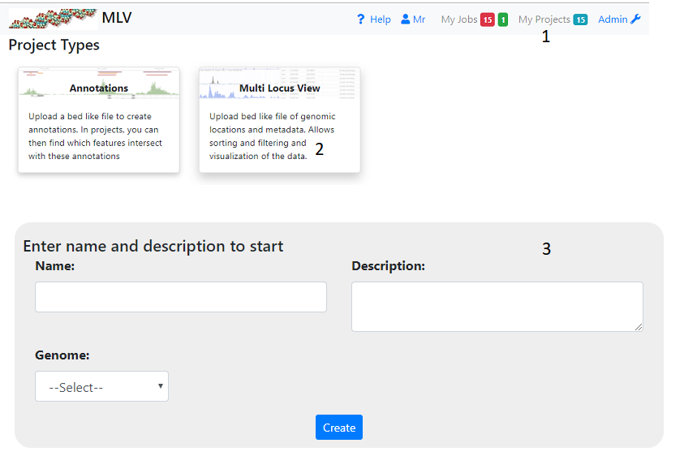
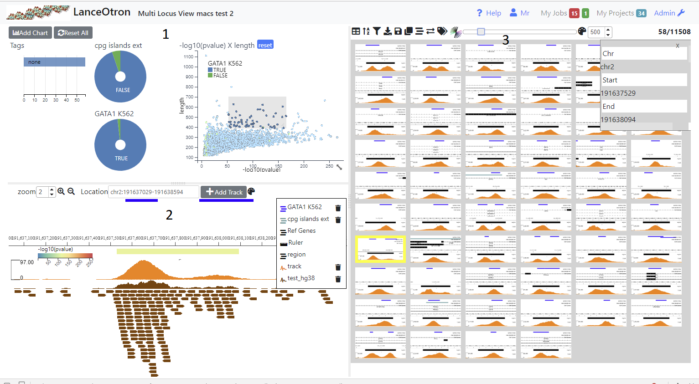
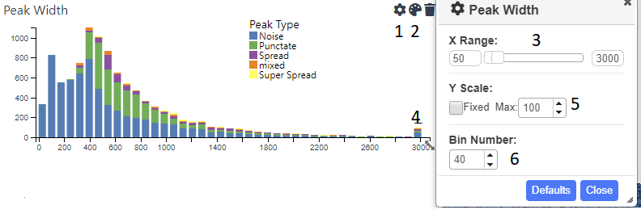
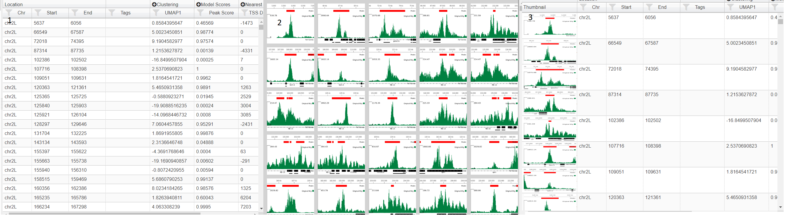
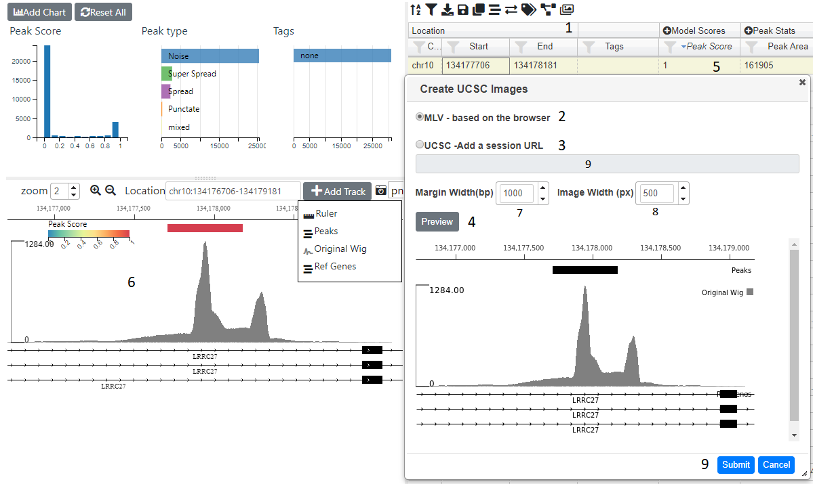

Multi Locus View¶
Summary¶
Multi Locus View (MLV) enables the user to visually inspect the underlying data from NGS experimets e.g. RNA-seq, ChIP-seq. Initially, the user uploads a list of genomic locations and associated data, which can then filtered, sorted and viewed. Operations such as finding the nearest TSS, intersections with other annotations/views can also be carried out. In addition charts can be created based on any the the parameters (or combinations of) and used to filter the data. Extra genomic tracks can be added and images generated for each location, so that trends in the data can be more easily recognised. Locations can be annotated (tagged) by the user and downloaded or exported to the data visualisation tool Zegami for further analysis.
Creating a Project¶
To create a project click on ‘My Projects’ (1) on the top navigation bar and then the Multi Locus View panel (2). This will take you to a page where you have to fill in the name and description of the project (3). You also have to select the gemome required. If the genome you want is not available select ‘other’. In this case gene information and other annotations will not be available. When you press ‘Create’ you wll be taken to a page where you can upload your file (see below)
Uploading Data¶
Press Choose in the displayed dailog and select your file containing genomic locations. The file format is quite flexible and can be either tab(.tsv) or comma(.csv) delmited and also can also be gzipped (.gz) The only requirement is that the first three columns (in order) specify the genomic location i.e. chromosome, start and finish. Normal bed files fulfill these criteria as well as excel data that has been saved as a .csv or .tsv file. The file will be parsed and the column (feild) types will be ascertained.

Once a file has been chosen and parsed and is found to be valid, the fields (columns) detected in the file will be displayed. Ensure the correct datatype has been deduced and change if necessary using the dropdowns (2). The header names are taken from the file (1), but you can change these and you can also delete any columns that you do not want (3). If no headers were detected in the file, enter the name of the column - the value of the first row is given to help you (1). If the file contains a header , but it was not detected, check the Has Headers box (4) at the the bottom of the dialog.
Once you are satisfied, press the upload button. There will be a delay as the data is uploaded and processed and if there are no problems you will be presented with an initial view
Viewing the Data¶
The view is divided into three sections. The top left shows charts (1), the bottom left a simple genome browser (2) and the right section shows a table containing all the genomic locations (3). Initially no charts are present and the browser only shows a track of the uploaded genomic regions (and possibly a RefGene track if a genome was selected). In order to make it easier to view and filter your data you need to add charts (see Adding a Chart) and browser tracks (see Adding Tracks)
Graphs/Charts¶
Charts help you get a picture of the data as a whole and also help you filter the data. By selecting regions (dragging with th mouse) on scatter plots and histograms or clicking on sections in pie charts, row charts and box plots, the data can be intutitively filtered. With each filtering step, all charts will update (as well as the table and browser) to reflect the filtered data. Filters on individual charts can be removed by clicking the reset button which appears on the chart’s title bar when a filter is applied or filters on all charts can be removed with the ‘Reset All’ button.
Initially the only chart visible will be a row chart showing Tags (see Tagging Locations) so you need to add other charts to get a better insight into your data (see below)
Adding a Chart¶
Clicking on the ‘Add Chart’ button will show a dialog where you have to select the type of chart, the fields to use in the chart and its name. Once created you can change the chart’s settings ( icon), which differ according to the chart’s type and with some charts color it ( icon). Charts can moved by dragging them via the title bar and resized by the resize icon which appears in bottom left hand corner when the mouse is over the chart. The chart can be removed by clicking the trash icon, which appears when you hover over the graph’s title. Once charts have been added and the appropriate settings/colors added, they can be saved using the icon above the table. The following chart types are available
Scatter Plot¶

A standard scatter plot requiring numerical fields for the x and y axis. Once created, the points can be coloured ( on the title bar). Also by opening up the settings dialog ( icon) you can alter the point size (3). By default the graph will show all the points, but you can zoom in and out using the mouse wheel and pan by pressing shift and dragging with the mouse. However if you want the default view to be a particular region, you can set this using the inputs in the Main Region section (4)and pressing show. The x and/or y axis can also be set to a log scale (5). After zooming and panning, the Centre Plot button (6) will restore the plot to show all the points or the region specified in (4). Normal mouse dragging (without shift) will cause pruduce a brush that filters the data, once created the brus can be dragged to different regions of the plot.
Histogram¶
Shows the distribution of a numerical field in the data. The x range is automatically set to include the largest and smallest values. However, this will often lead to the chart looking skewed due to low numbers of extreme outliers. Therefore, you can use the cog icon (1) to open up the settings dialog, where an upper and/or lower limit can be set (3). Values higher or lower than these limits will be lumped together in the outermost bin (4). The y axis can also be capped (5) in order to get a better handle on bins conatining fewer counts. The number of bins can be adjusted using the appropriate spinner(6). Each bar can be coloured by categorical data use the icon (2).
Pie Chart¶
Shows categorical data. By default the maximium number of categories shown are the 8 largest ones, any reamining categories are lumped into ‘Others’. This can be changed by opening up the settings dialog (). Clicking on a segment (category) will select that category and clicking on further segements will add these to the filter. To filter again with a single category, use the reset button.
Row Chart¶
A chart showing catgories on the y axis and usually the number of records belonging to this category on the y axis. You can also choose a numerical field for the x axis, in which case the values of this field will be summed for each category. However a boxplot is usually more informative for this kind of information as the average and quartile ranges of the values are shown instead of the sum. As with the pie chart, the maximium number of categories shown are the 8 the largest ones, but this can be changed by opening up the settings dialog ()
BoxPlot¶
A chart showing categeories and average/quartile ranges of the values of another field for that category. Box plots work best for fields that contain only a small number of categories. They are scaled to include all the datapoints, so if there are extreme outliers, the boxes will appear squashed.
Browser¶

The browser shows the genomic location of the currently selected table row (or image). The distance either side of the region to also show can be controlld using the margin spinner (1) above the browser
Adding Tracks¶
Initially only two tracks will be displayed, the genomic locations you uploaded and if you didn’t select ‘other’ for the genome, a track is displaying the genes. Other tracks can be added with the ‘Add Tracks’ button (2), which shows a dailog where you need to enter the url of a publically accessible track. The hosting server of the track should allow Cross Origin Resource Sharing (CORS). The type of track will try and be ascertained based on the url, although you can manually overide this by clicking on one of the radio buttons
Tracks that can be added are:-
- bed(tabix) - A bed file that has been gzipped and indexed with tabix
- BigBed
- BigWig
- Bam - A bam index is also required
- UCSC session - either cut and paste the url from the UCSC browser or use a session url. The latter will be more stable as the former uses a temporary id, which is only valid for a short period.
Altering Track Appearance¶
Clicking on the track label in the legend (3) will open a dialog for that track. The contents of the dialog will vary according to the type of track. The track height can be altered from this dialog
Zooming/Panning¶
There are five ways you can navigate using the browser:-
- You can zoom in and out using the mouse wheel and scroll left and right by deagging the mouse
- Use shift and drag to highlight and zoom into a region on the browser
- Use the magnifying glass icons (4), the zoom amount can be controlled by the adjacent spinner (5)
- Type the location co-ordinates (chr:<start>-<stop>) in the location text box (6)
- Click on a row or image in the right hand table to go to that feature. The margin spinner (1) shows how many bp either side of the feature will be displayed.
Region track¶
This shows the uploaded regions(features) displayed in the right hand table. Clicking icon (7) will allow you to color these locations by one of the the columns present in the table. Clicking on a region will highlight the corresponding row in the table.
Saving the Browser Layout¶
Use the disk icon above the the table to save all settings inclusding the current layout of the browser (tracks and track settings)
Capturing An Image¶
Use the icon (0) to download an image of the current browser view. The image format (png, pdf or svg) can altered using the adjacent dropdown (10)
Table¶
The table behaves as a typical spread sheet, you can alter the column width by draggging the header’s left and right borders and move columns by dragging the column’s header. Clicking on the header will sort by that column. Clicking on that row will select it and update the browser.
Table Mode¶
If your project contains images (see Adding Images) then then you change how the table is displayed using the table icon (). Three choices are table (1), images (2) and table with thumbnials (3).In image mode, the genomic location can be selected by clicking on the image and using the arrow keys to select the next/previous image. In this mode, the data can be sorted and filtered using the icons ( ) in the menu above the table. Also in image mode you can alter image size using the slider in the table menu and also color the border around the image by a field (). This opens up a dialog where you can choose the field and the color scale to use
Filtering Data¶
It is often more intuitive to filter using graphs (see Graphs/Charts ), however data can be filtered by clicking on filter icon in each column header. To filter multiple columns or when the table is only showing images,press the filter icon on the top table menu. This will bring up a dialog showing filtering options for all fields in the data. Whenever any filters are added or changed, any charts will update accordingly,but the filters are not added to the charts as they are completely independant.
Sorting Data¶
The data can be sorted on columns by clicking the column header (shift click to sort on multiple columns). The data can be also be filtered by clcking the sort icon in the table menu. In the sort dialog,the columns to be sorted on are added usng the plus icon and then either Ascending (ASC) or descending (DESC) can be chosen . The sort order can be changed by dragging the labels or columns removed from the sort by clicking on the trash icon
Tagging Locations¶

Sometimes it may be useful to catgeorise or tag the genmic location based o a trend theat that you have discovered. This can be done by opening up the tagging dialog with tag icon (1) in the menu above the table. Initially only the none category is present. To add other ones type a name in the text box (2) and press the add button (3) . The category will then be added . By selecting the radio button next to it, then clicking on an image or a cell in the tagging column in the table will tag that genomic location. Multiple locations can be tagged by clicking and image/cell and the shift clicking another one and all the images/rows in between will be tagged. The ‘Tag All’ will tag all the currently filtered locations with the currently selected catogry. Another way to tag is to use the arrow keys to go to the next previous image/row and then press the shortcut key shown in brackets next to the category to tag the currently selected items with that category. The category color can be changed by clicking on the appropriate color chooser (7). The category can be removed (which will remove all tags of this category from the data using the trash icon next to the category (8)
N.B. To permanantly save the tags press the Save button (5) which will commit the changes to the database
Adding Images¶
Images for every genomic location can be added to the project and the displayed in the table.The icon (1) opens up a dialog where you can choose to either have images created from the internal browser (2) or by the UCSC browser (3). The USCS option , can have more detailed images but is much slower and you are limited by the number of images you can create. You can create a smaller subset and create images (see Creating Subsets)
MLV Images¶
Clicking on the Preview button (4) will show a preview of the image for the currently selected row (5). The image is based on the tracks and settings in the browser (6) see Browser on how to add tracks and alter their appearance. You can adjust the image width and the width of margins shown either side of the genomic location by using the apprpriate spinners (7 and 8). Once you are happy with image you can press submit button (9) and images for all genomic locations will be created. This will take a few minutes (approx 800 images/min).
UCSC Images¶
Clicking on the UCSC radio (3) will enable the the URL input (9) where you can paste a UCSC browser URL or session. Pressing preview will check the url is valid and produce an image based ob the margin width (7), image width(8) and selected gemomic location (5). If a preview was sucessfuly produced then you can press the submit button (9) to generate images for all genomic locations. This will take quite a while.
An email will be sent when all images have been generated. You can then view the table in image or thumbnail mode (see Table Mode) and upload the project to Zegami